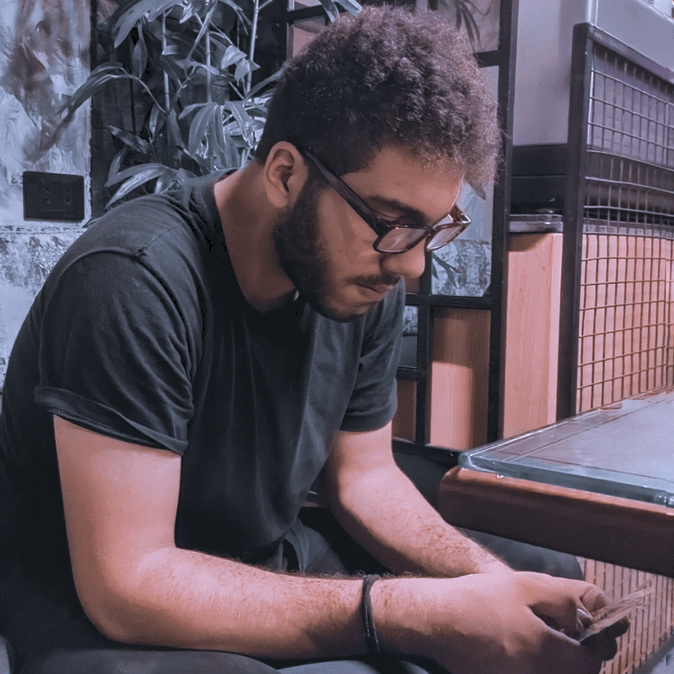

My Dearest Jeshelle,
As I sit here under the same moonlight that graces your skies, my heart aches with the longing to hold you close, to feel your warmth against my skin, and to whisper sweet words into your ear. Distance may keep us apart, but it can never diminish the love that burns within my heart for you.
Every day, I find myself counting the moments until we can be reunited, sharing stolen glances and tender kisses. The miles between us only serve to strengthen the bond we share, as I am reminded of your beauty, your laughter, and the way your eyes light up when you smile. The very thought of you is a balm to my soul.
In your absence, I've come to cherish every memory we've created, each conversation, and every photograph we've taken together. They are a testament to the love we share, a love that transcends time and space.
Though we may be separated by miles, I carry you with me, close to my heart, and every day is a step closer to the moment when we will finally be together again. Until that day, I'll keep loving you, missing you, and cherishing the moments we've had, for every day brings us one day closer to our reunion.
Please know, my love, that you are the most precious thing in my life, and I'll forever hold you in my thoughts and in my heart. Until we are in each other's arms again, I'll send you all my love, and I'll wait with bated breath for the day when I can look into your eyes and say, "I love you," in person.
Yours, now and always,
Your Mahmoud.

From the moment we first connected, I felt a connection that defied logic and reason. Our conversations, our shared dreams, and the laughter we've shared have created a tapestry of love that is as real and vibrant as if we were right beside each other. It's almost surreal how two souls, separated by such a vast distance, can form an unbreakable bond.
I've often pondered what it would be like to hold your hand, to look into your eyes, to share a real-life smile, and to feel your presence. But, despite the physical separation, our hearts have woven a love story that is as real as any other. Our love transcends borders and knows no limits, thriving on the authenticity of our connection.
In your absence, I've learned the true meaning of patience, trust, and the power of an unwavering heart. Every moment I spend thinking about you is a moment well spent, for it brings me closer to the day we will finally meet. I eagerly await the time when I can look into your eyes, hug you tightly, and savor the warmth of your presence.
Until that day arrives, please know that my love for you only grows stronger. Distance may separate our bodies, but it can never keep our hearts apart. I look forward to the day when we can rewrite our love story with every touch, every smile, and every shared moment.
With all my love and longing,
Your Mahmoud.
.jpg)
.jpg)
.jpg)
.jpg)